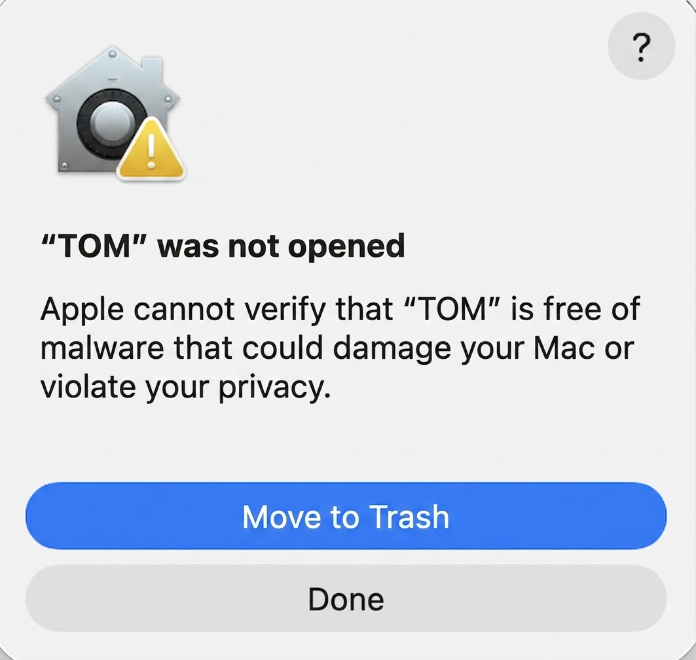
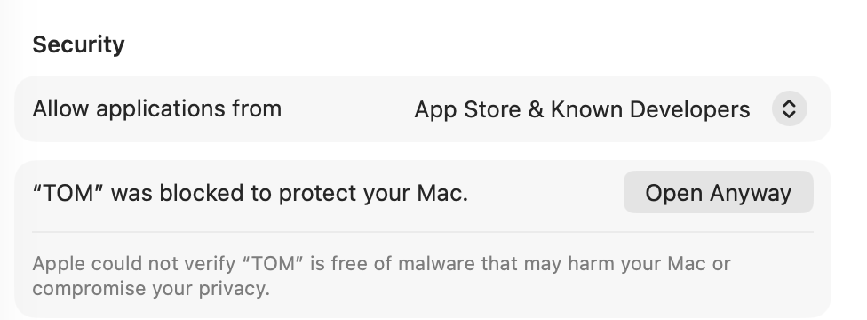
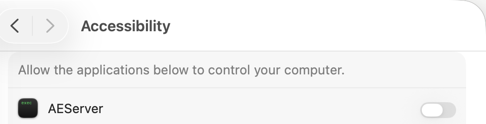
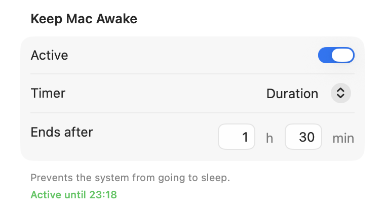
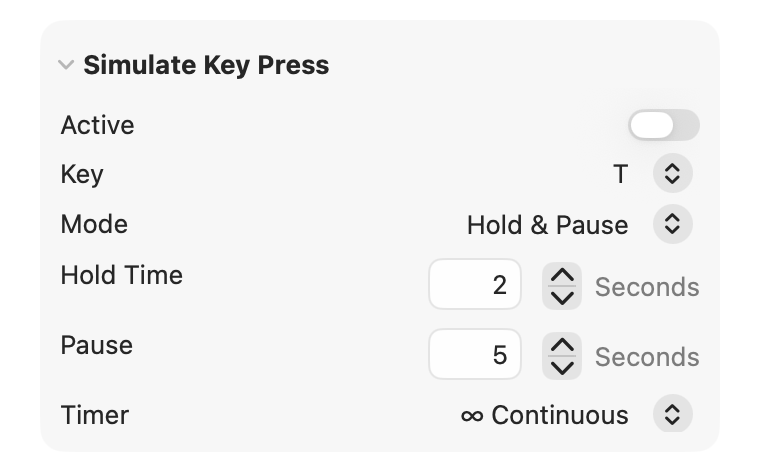
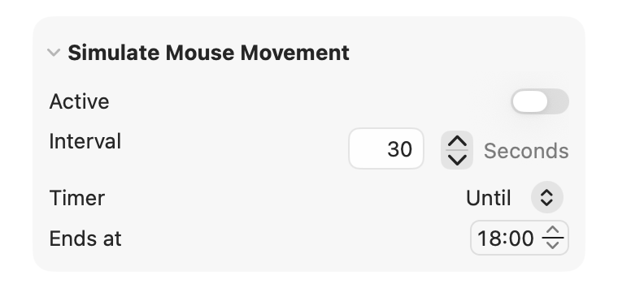
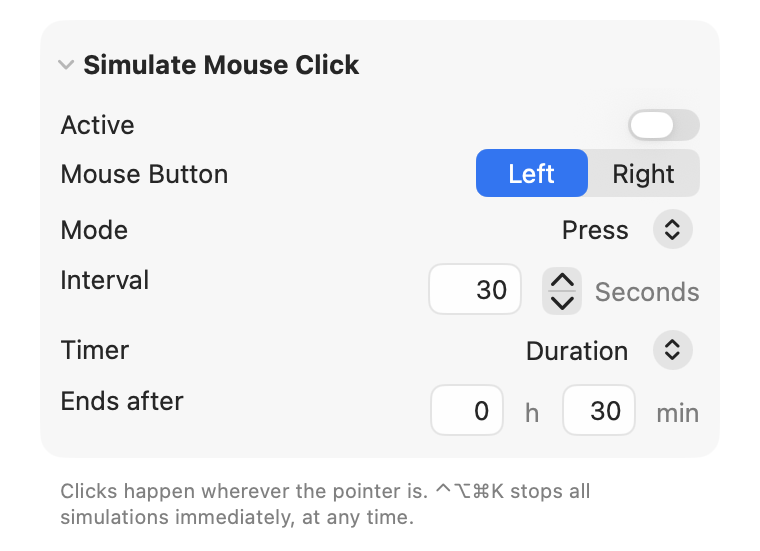
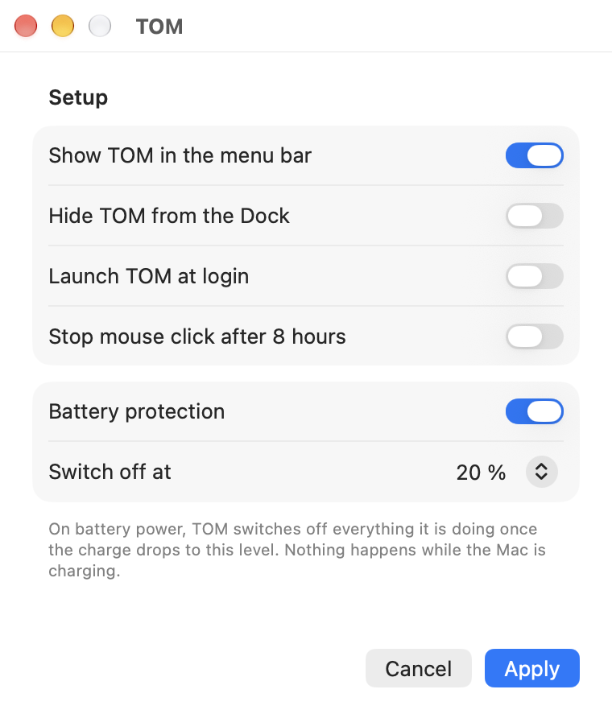

TOM is a small, free, open-source menu bar and window app for macOS with four independent functions: keeping the Mac awake, and simulating a key press, mouse movement or a mouse click. Each one can run continuously or on a timer. This manual covers the parts that are not obvious from the app itself — installing an app that is not notarized by Apple, and granting the permission the simulation features need — and gives a short tour of every function.
Download the latest release. There are two ways to install it:
TOM is signed locally but not notarized by Apple (notarization requires a paid developer account). The first time you open it, macOS blocks it and shows a warning like this one:

Click Done — do not move it to the Trash. Then open System Settings → Privacy & Security and scroll down to the Security section. You'll find a message about TOM there, with an Open Anyway button next to it:

Click Open Anyway, confirm with your password or Touch ID, and TOM starts. You only need to do this once per downloaded copy of the app.
Keeping the Mac awake needs no special permission. The other three functions — simulating a key press, mouse movement, or a mouse click — do, because they send input events at the system level. TOM asks for this the first time you switch one of them on, and links directly to the right place:

Find TOM in the list and turn its switch on.
Good to know: TOM is signed locally, not with a stable developer certificate. That means the permission can reset itself when you install a new version — if a simulation feature suddenly refuses to start after an update, open Accessibility settings, toggle TOM's switch off and back on, and try again.
Keep Mac Awake is always visible. The three simulations sit in sections you can fold in and out by clicking their title — TOM remembers which ones were open. While a folded section is running, its title shows a green Active badge, including the end time if a timer is set.
Timer: every function has the same timer setting. ∞ Continuous (the default) runs until you switch it off, Duration runs for the hours and minutes you enter, and Until runs until a time of day (tomorrow, if that time has already passed today). TOM shows when a running timer ends and then switches the function off by itself.

While switched on, the display and the system won't go to sleep due to inactivity — independent of your Energy Saver settings. No permission required.

Sends a real key press. The key list follows your keyboard layout, so the letters shown match what's printed on your keys. Choose a Mode:
After switching on, TOM waits 5 seconds before it starts, so you can bring the target window to the front. A held key behaves like one that stays pressed down; it doesn't type the same character repeatedly the way holding a physical key in a text field would.

Nudges the pointer one pixel and immediately back, at the interval you set. No click, no visible movement — just enough for the system to register activity.

Works with the left or right mouse button wherever the pointer currently is, with the same three modes as the key press: Press clicks at an interval down to 0.1 seconds, Hold keeps the button down, Hold & Pause alternates. It also starts with a 5-second countdown and runs as long as you set — an optional 8-hour limit is available in Setup.
Emergency stop: ⌃⌥⌘K — stops key press, mouse click and mouse movement immediately, from any app, at any time, and releases any key or mouse button TOM is holding. It's shown in TOM's window whenever a simulation is running.

The Setup page holds the options that apply to the whole app. Changes take effect when you click Apply; Cancel discards them. Everything here is off by default.
If you switched on Launch TOM at login, switch it off in Setup first. Then quit TOM and move TOM.app from your Applications folder to the Trash. To also remove its saved settings, run this in Terminal:
defaults delete com.neonrost.TOM